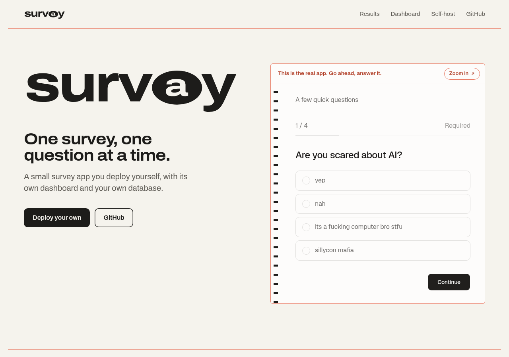
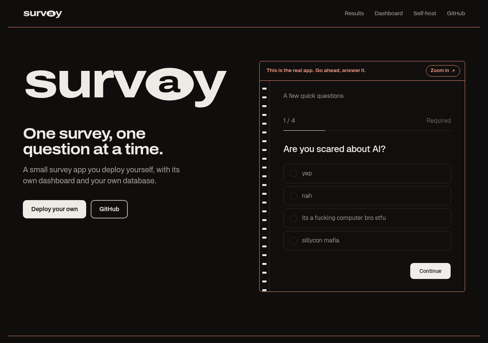
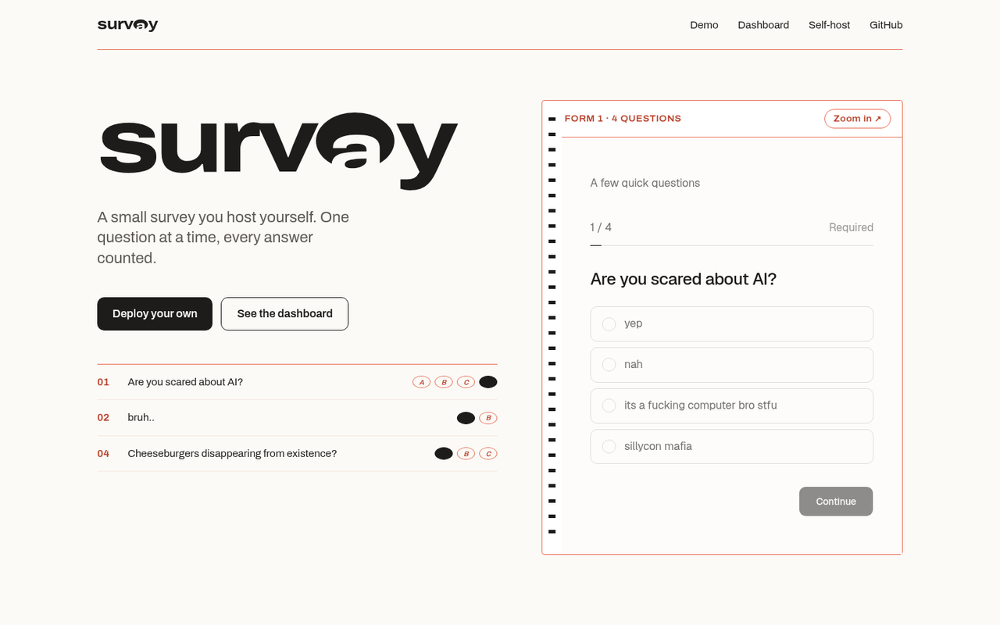

survay
The answer sheet: the form is printed in salmon, your answers are graphite bubbles.
The answer sheet: the form is printed in salmon, your answers are graphite bubbles.
One survey per deploy.
See how everyone answered.
One survey, one question at a time.
A small survey app you deploy yourself, with its own dashboard and your own database.
Body 17/1.5. Display at width 112, weight 680, tracked -0.03em. The app inside keeps Geist.


